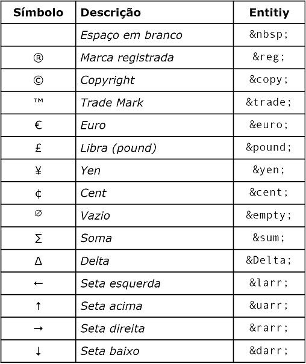

Estudando listas.
Listas Não Ordenadas
Listas não ordenadas são utilizadas quando os itens não estão dispostos em ordem numérica. Quando a ordem dos itens é alterada não há mudança de significado entre eles, pois os itens não possuem uma definição exata dentro da lista.
Exemplo de lista não ordenada:
- Café
- Leite
- Bolacha
Os itens de uma lista não ordenada são marcados com uma pequena bolinha preta denominada disc, sendo o padrão. No entanto, a marcação padrão ode ser alterada utilizando o atributo <type>.
Utilizando o marcador circle:
- Item da lista
- Item da lista
- Item da lista
Utilizando o marcador square:
- Item da lista
- Item da lista
- Item da lista
Listas Ordenadas.
As listas prdenadas são usadas para os itens que desejam ser marcados com números.
Exemplo de lista ordenada:
- Item 1 da lista
- Item 2 da lista
- Item 3 da lista
Os itens de uma lista ordenada são marcados de forma padrão por números. Para representar alfabeticamente ou com algarismos romanos, utilizaremos <type="a"> ou <type="i">.
Utilizando o <type="a">:
- Item 1 da lista
- Item 2 da lista
- Item 3 da lista
Utilizando o <type="i">:
- Item 1 da lista
- Item 2 da lista
- Item 3 da lista
Listas de Descrição.
Uma lista de descrição é usada para organizar termos ou nomes com uma descrição. Para definir uma lista de descrição utiliza-se a tag é denominada <dl>.
Dentro de <dl>, usa-se <dt> para nomes/termos, e <dd> para a descrição dos mesmos.
Exemplo de uma lista de descrição:
- Item 1
- - Este é o primeiro item da lista.
- Item 2
- - Este é o segundo item da lista.
- Item 3
- - Este é o terceiro item da lista.
Listas Aninhadas.
Listas aninhadas são listas dentro de listas.
Exemplo de lista aninhada:
- Frutas
- Banana
- Maçã
- Mamão
- Sucos
- Laranja
- Morango
- Limão
Controle de contagem de listas.
Por padrão, a enumeração de uma lista ordenada inicia-se no 1. Use o atribuuto <start> para iniciar a contagem de um número específico.
Exemplo de uma lista com contagem inicial em um específico número:
- Item 1 da lista
- Item 2 da lista
- Item 3 da lista
- Item 1 da lista
- Item 2 da lista
- Item 3 da lista
Entidades HTML.
Essas entidades HTML são símbolos que só conseguem ser exibidos no navegador com a utilização de códigos.
Para representarmos os colchetes angulares < e >, escrevemos da seguinte maneira:
- com *lt; estamos descrevendo o símbolo "menor que" (less than).
- com *gt; estamoms descrevendo o símbolo "maior que" (greater than).
Para inserirmos qualquer código para formatação dos símbolos é necessário colocar o prefixo &.
A seguir, uma tabela com alguns códigos úteis:
Formatação de textos.
As tags de formatação de texto não servem para embelezar, e sim, dar semântica ao seu texto. Quando escrevemos alguma palavra em nergito ou itálico no HTML, estamos dizendo para ele que essas palavras tem uma certa importância dentro daquele contexto. Abaixo há alguns exemplos de tags com semânticas para formatação de textos:
- A tag
<strong>: texto em negrito. Confere uma importância particular. - A tag
<em>: texto em itálico. Dá enfase ao texto. - A tag
<mark>: para marcar, realçar o texto. - A tag
<ins>: sublinha o texto. Indica atenção. - A tag
<small>: deixa o texto menor, sendo empregado para marcar avisos obrigatórios, restrições legais ou restrições de uso de conteúdo (copyright). - A tag
<del>: excluir ou eliminar em texto. Usa-se para desconsiderar um texto. - A tag
<sub>: texto subscrito - H2O. - A tag
<sup>: texto sobrescrito - 22. - A tag
<abbr>: utilizada para colocar o significado de siglas - CSS ← passe o mouse! - A tag
<code>: conteúdo estilizado indicando que é um fragmento de código. - A tag
<pre>: o texto é exibido em uma fonte de largura fixa e preserva os espaços e quebras de linha. - A tag
<cite>: representa uma referência a umm trabalho (livro, poema, música e etc.). - A tag
<q>: destina-se a citações curtas e coloca o texto entre aspas. O atributo<cite>dentro da tag<q>é uma URL que indica uma fonte ou mensagem para a informção citada. - A tag
<blockquote>: para citações longas, criando um recuo no texto. - A tag
<adress>: para informações de contato, podendo ser endereço físico, URL, e-mail, telefone, midia social e etc.